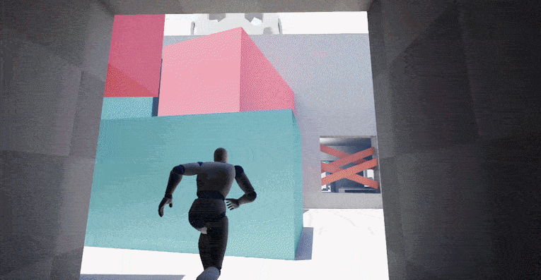
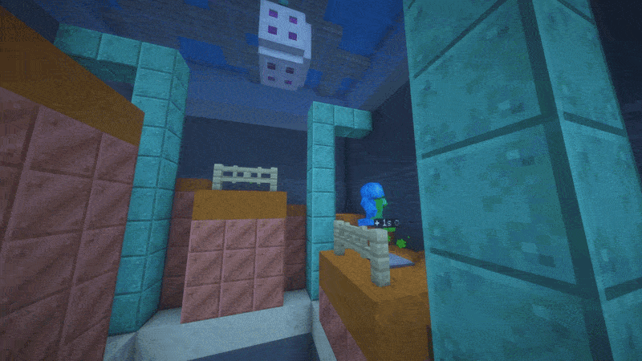

The Dead Jay
Unreal Engine 5 Stealth Level Design Project.

Project Overview
The DeadJay is a level inspired by Hitman 3's Berlin mission. This level concept has the ultimate goal of eliminating the DJ performing at a nightclub built in an abandoned Cold War facility. To avoid detection, the player's first goal is to turn off the power by reaching 3 radomes across the map and turning off their power supply.
- Dev Time: 1 month
- Role: Everything
- Goals: Stealth design, interconnectability, verticality, choice
- Engine: Unreal Engine 5
Research
Much like how the Hitman team researches possible locations, I went online to search up what abandoned nuclear power plants/Cold War facilities looked like and how I could adapt those features into a stealth mission.
I took notes in a Google Document, posting several reference images of exteriors, interiors, and atmospheres that correlated with the mysterious, abandoned facility setting. I also noted all possible locations I found in these references that I could include in the map, ensuring that I had no shortage of interesting rooms or buildings (repetition of assets or ideas might make the level feel stale or boring!)
Examples of noted locations:
- Main DJ booth and Dance Floor
- Basketball Court
- Rooftop Firepits
- Security Building
- Outside Restaraunt
Ideation and Sketch
Once the research was done, I had to narrow down possible location ideas based on several important factors that related to key level design principles. I asked myself these questions to help:
- What locations provide interesting gameplay opportunities?
- What are some possible points of interest?
- Can these locations be easily gamified? (flow well, less cluter)
Once I had an understanding of what locations worked well, I began to do a top-down sketch of the level in Figma. The main goal of the sketch was not only to pin down locations I had decided upon, but also to achieve one of my design pillars: interconnectability. I wanted one objective to flow seamlessly to the next while also providing the player with interesting opportunities along the way.
This proved to be challenging, as the player could choose which radomes to tackle first. This meant that every possible order of radomes needed to have a similar level of intrigue.
Scaling and Inital Blockout
Using the sketch I made, I began to find the right scale for the level. I pasted the sketch into Unreal so that I could fine-tune the measurements in relation to the controllable character. Scale was one of the hardest things for me to grasp, as I knew that for 3rd-person levels to flow well and seem less claustrophobic, rooms and buildings are typically given more room.
What helped me most in this process was to find real-life measurements of objects or places I had on the level. For example, there's a basketball court on the level, which was key in helping me line up my sketch to the desired size.
Overall, this first blockout was meant to test the flow and interconnectability of buildings without having done the interiors yet. I made changes based on my own playtests, one being that I decided to connect the Security Building and the main DJ building to give players another traversal option.
Final Blockout
The goal of the final blockout was to finish the interiors and add in possible assets/colors so that an environment artist could easily follow along with my vision. Colors also helped give players a sense of direction: red stops signs signified areas the player wasn't allowed in, and yellow crates were used to show potential obstacles or crouching spaces.
I also did a small amount of visual scripting with blueprints to simulate what it felt like for the DJ room to lose all of its lighting once all 3 radomes had been reached. One small touch I added to make that experience even better was to add a "backup light" that would only illuminate the DJ. This would make him as visible as possible and would make for an easy sniper/pistol kill.
Overall, for one of the first projects I've built in Unreal, the end product turned out better than I imagined. However, there are still a lot of things I would improve, notably lighting and a better interior scale.
The Great Plateau
Minecraft level design over the span of 6 months.

Project Overview
This map is a recreation of the Great Plateau from The Legend of Zelda: Breath of the Wild, but done through the unique movement mechanics of Minecraft. It combines the open-ended and puzzle elements of the original game and its own movement-based twist!
This project is the culmination of many level design principles I've learned over time, but it still taught me the important process of creating an entire, finished product from start to finish.
- Dev Time: 7 month
- Role: Mostly solo, aside from design and some tech roles
- Goals: Player freedom, engaging puzzles, indirect learning
Research and Analysis
Before blocking out the terrain and shrines, it was important that I did an analysis of Breath of the Wild's world and puzzle design to understand its core design ideas so I could accurately recreate it. In my analysis, I noticed two central ideas: visible points of interest and freedom of choice.
Points of Interest: On the Great Plateau, there are always at least two points of interest visible from any other point of interest. This provided players with a clear goal whenever they finished their current one.
Freedom: The mechanics of Breath of the Wild allow for almost unlimited freedom of approach, and the design of the Great Plateau reflects this. Any path a player chooses when heading towards their goal is allowed, providing an almost infinite number of possibilities when traveling between goals.
Open-World Implementation
Using what I learned, I translated the design philosophy into Minecraft's unique movement mechanics. With the main mechanics centered around movement, I needed to find a way for players to have freedom of choice while also garnering a sense of progression throughout the map.
My idea was to have the entire map accessible from the start, but traversal would be difficult without further progression. Once you get more abilities from shrines across the map, more solutions to obstacles would open up.
My idea was to have the entire map accessible from the start, but traversal would be difficult without further progression. Once you get more abilities from shrines across the map, more solutions to obstacles would open up.
Furthermore, to make players feel that their abilities are contributing to progression, I wanted a higher concentration of ability-specific solutions near their respective shrines. For example, right after finishing the Trident Shrine, there are more opportunities to use your Trident to pass obstacles. I created a map that helped me decide where these concentrated areas should be.
Puzzle Design
The first 4 shrines in Breath of the Wild follow the design pillar of experiential learning, allowing players to learn about their abilities in an unobtrusive way. However, because these shrines served as the tutorial for the game, they are basic and short. My map only focused on the Great Plateau, and I wanted to provide a more holistic experience; therefore, alongside experiential learning, another design pillar I included was mastery of mechanics.
To achieve this, every shrine needed to be executed such that the player feels they learned something, while also fully understanding their abilities; a difficult task, to say the least. Therefore, my goal for each shrine was to include 3 "trials" that explore a mechanic unique to the shrine's main ability, with each puzzle in the trial getting progressively harder to give the player a sense of mastery. The last level of each trial would be the "ultimate" test.
I used Google Docs to organize my ideas and plan trials before going to the blockout process. If I needed extra clarity, I would sometimes make very quick sketches of possible mechanics in Google Drawings.
Blockouts
Once the trials, level count, and overall tone of the shrine were decided, I made rough blockouts of each shrine. These helped me gauge level flow, balance, and how well I achieved mechanical mastery over the course of the shrine.
There were times where mechanics I had come up with felt unpleasant, or I couldn't work with the scale. These issues would often send me back to the planning phase, but they helped me learn what could and couldn't be achieved with the limitations I was presented with.
These blockouts also allowed me to gather playtesters before committing to decoration.
Playtesting and Refinement
When it comes to my playtesting process, I'm very strict and like to treat it as though I'm conducting research. Before playtesting begins, I always write standardized instructions and post-playtest questions to ensure the results aren't biased. This was important to ensure the feedback I received was consistent and helpful for refinement.
Examples of Playtest Questions:
- Did you find it confusing to learn or come to understand the main mechanic?
- Did the difficulty naturally progress? Did every level feel a bit more challenging than the last? If not, which levels do you think broke this cycle?
- Did the experience drag on too long? At any point did you want to move on to a new trial?
- Would you play more levels if the idea was expanded upon?
For both the open-world spaces and puzzles, the main piece of feedback (and my main concern) was about the balancing. Certain levels felt harder than the rest, or some cliffs felt too hard to climb. To address the issue, I would set aside a day or two and focus on only balancing, making nerfs/buffs as needed.